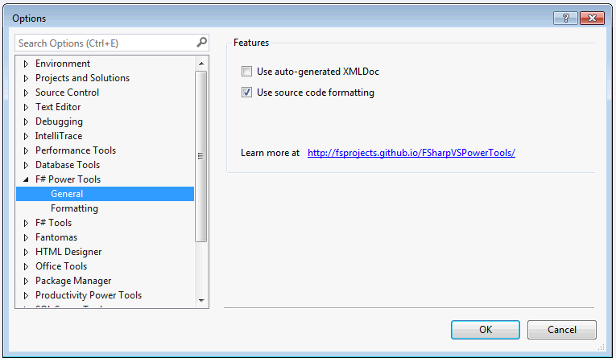

You can install this extension in Visual Studio 2015, Visual Studio 2013 and Visual Studio 2012 by searching for "FSharp Power Tools" in "Tools --> Extensions and Updates --> Online". The extension is also available in the Visual Studio Gallery.
User guides
The extension comes with independent commands which can be toggled on/off in "Tools --> Options --> F# Power Tools --> General" dialog:

More information is available on Frequently Asked Questions.
Here are currently supported features:
- Auto-generating XmlDoc
- Source code formatting
- Navigation bar
- Highlight references
- Rename refactoring
- Depth colorizer
- NavigateTo
- Syntax coloring
- Folder organization
- Find all references
- Implement interface
- Record stub generation
- Union pattern match case generation
- Resolve unopened namespaces and modules
- Go to metadata
- Task List comments
- Generate references for F# Interactive
- Navigate to source
- Quick info panel
Default Keymap
Command |
Hot-key |
|---|---|
Rename refactoring |
Ctrl + R, Ctrl + R |
NavigateTo |
Ctrl + , |
Find All References |
Shift + F12 |
Go to metadata |
F12 |
Formatting Document |
Ctrl + K, Ctrl + D |
Formatting Selection |
Ctrl + K, Ctrl + F |
Formatting Cursor Position |
Ctrl + K, Ctrl + F |
If you are using Visual F# Power Tools along side with ReSharper 8 or below, there is a known issue where some F# commands are hidden by ReSharper. You can workaround by disabling the ReSharper option "Hide overridden Visual Studio menu items" (ReSharper -> Options -> Keyboard & Menus).
Contributing and copyright
The project is hosted on GitHub where you can report issues, fork the project and submit pull requests. You can suggest new features at our user voice system. Please vote for your favorite features so that they have higher chances to be implemented. If you're adding new features, please also consider adding user guides that can be turned into documentation.
The extension is available under Apache 2.0 license, which allows modification and redistribution for both commercial and non-commercial purposes. For more information see the License file in the GitHub repository.